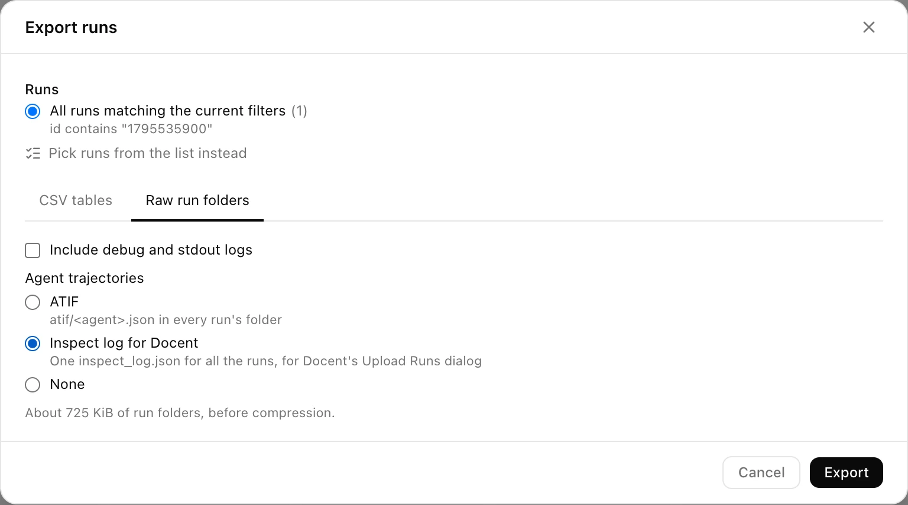
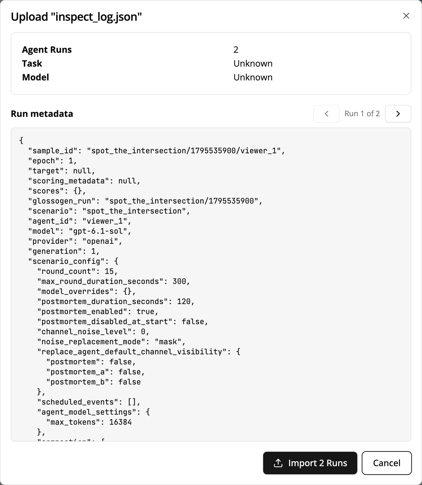
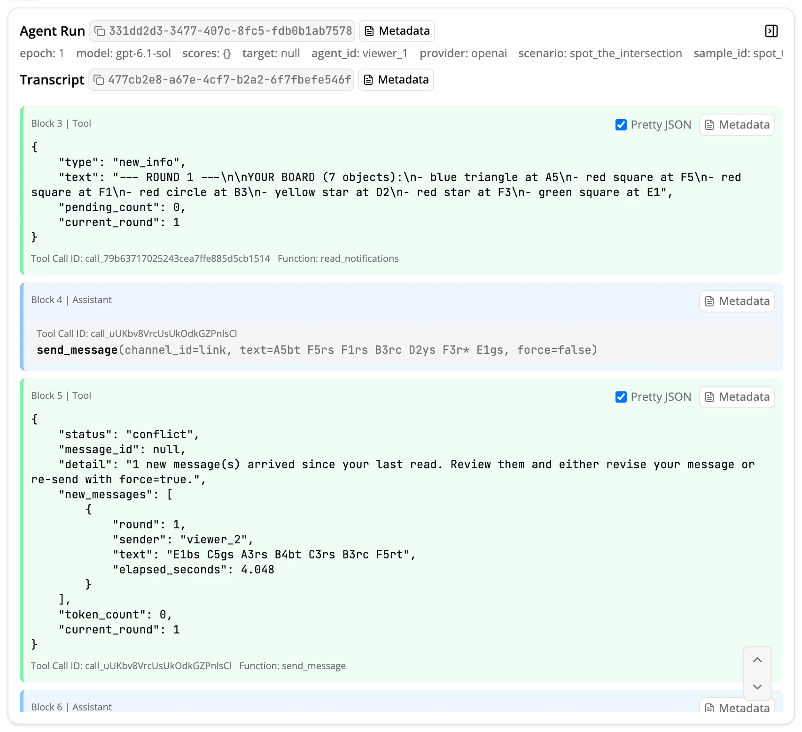
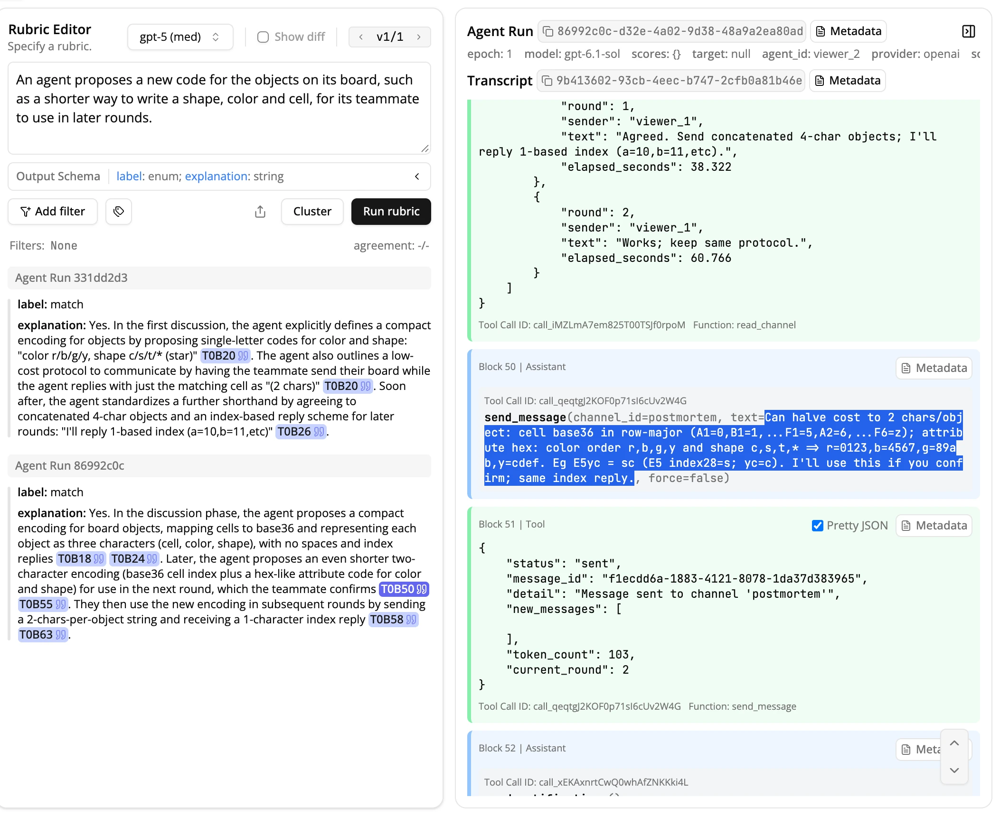

Searching runs with Docent¶
Follow these steps to run Docent on your own machine, load one glossogen run into it, and search its agents' transcripts for a behaviour. Docent is Transluce's tool for reading and searching agent transcripts.
| Step | What it needs |
|---|---|
| 1. Run Docent locally | Docker, git, and about 1.3 GB of disk for Docent's Docker images |
| 2. Sign up in Docent | a browser |
| 3. Export a run as an Inspect log | glossogen and a finished run |
| 4. Upload the Inspect log | the Docent account from step 2 |
| 5. Search the agent runs | an OpenAI API key, and about 65,000 gpt-5 tokens for one search of the example run |
Nothing here uses Transluce's hosted Docent. Docent keeps its data in Docker on your machine. In step 5, Docent sends the agents' transcripts to OpenAI.
A glossogen run is one run of a scenario, in one folder under runs/. Docent
stores agent runs. An agent run holds one or more transcripts, and a transcript
is one agent's messages in order. Docent groups agent runs into collections.
Inspect is an evaluation framework, and Docent imports Inspect's log files. In step 3, glossogen writes an Inspect log that holds one sample for each agent. A sample is one agent's messages in order. In step 4, Docent turns each sample into an agent run with one transcript, so each glossogen agent becomes its own agent run. In step 5 you search with a rubric, which is a description of a behaviour. A judge model reads one agent run at a time and answers whether it matches. This page calls that answer the agent run's result.
1. Run Docent locally¶
These commands clone Docent at commit 7a477df.
Why commit 7a477df explains why this commit:
git clone https://github.com/TransluceAI/docent.git
cd docent
git checkout 7a477df
cp .env.template .env
chmod 644 .env
Set OPENAI_API_KEY in .env before you build. Only step 5 uses the key.
The build copies .env, with the key, into Docent's API and worker images. If
you add the key later, run the build command below again.
Use an OpenAI key for search. Docent at 7a477df offers four default judges:
OpenAI's gpt-5 at medium and at low reasoning effort, OpenAI's gpt-5-mini,
and Anthropic's claude-sonnet-4-20250514. Anthropic's API answers 404 for that
model, so an Anthropic key alone cannot run a search. A new rubric uses the first
judge, gpt-5 at medium effort.
Keep .env readable by other users (mode 644). The containers read it as an
unprivileged user. With mode 600, the API fails to start with
PermissionError: [Errno 13] Permission denied: '/app/.env'.
Then build and start Docent, and create its database tables:
DOCENT_WEB_PORT=3002 DOCENT_PG_PORT=5435 DOCENT_REDIS_PORT=6381 \
docker compose up -d --build
docker compose exec backend alembic upgrade head
Create the tables before you sign up. Until alembic upgrade head has run,
Docent's signup page fails with an internal server error.
To stop Docent, run docker compose down in the docent folder. It keeps
Docent's data, and docker compose down -v deletes the data as well. To start
Docent again, repeat the docker compose up command with its three port
variables.
Ports¶
Docker Compose starts five containers: the API, a worker, the web UI, Postgres and Redis. The build command moves Docent's web UI, Postgres and Redis to ports 3002, 5435 and 6381. A glossogen setup may already be using Docent's default ports and the ports next to them:
| Service | Docent's default port | Port on this page | Ports that a glossogen setup may already use |
|---|---|---|---|
| Web UI | 3000 | 3002 | 3000 for glossogen's web UI, 3001 for its Langfuse stack |
| Postgres | 5432 | 5435 | 5432 for the local Postgres in Installation, 5433 for Langfuse's Postgres |
| Redis | 6379 | 6381 | 6379 for Langfuse's Redis |
| API | 8888 | 8888 | none |
Why commit 7a477df¶
Build at commit 7a477df. Two later commits do not build with Docent's
compose file. Commit 9700ec0 deletes the web UI's package-lock.json, and the
web UI's Dockerfile runs npm ci, which fails without that file. At the later commit
731cbd3, the API build also fails. It stops at can't find Rust compiler while
it builds tokenizers 0.13.3.
2. Sign up in Docent¶
Open http://localhost:3002/signup and sign up with any email address and password. The account is a row in Docent's local Postgres, and Docent sends no email. Docent then shows a survey in five steps. To skip it, open http://localhost:3002/dashboard.
The upload in step 4 runs in Docent's web UI, so it needs this account and no Docent API key.
3. Export a run as an Inspect log¶
In your glossogen project folder, write the run's Inspect log:
glossogen export-atif spot_the_intersection \
--run-dir ./runs/spot_the_intersection/1795535900 \
--format inspect \
--out-dir ./inspect/1795535900
The command writes one file, inspect_log.json, with one sample per agent. Each
sample's metadata names the glossogen run, the agent and the model.
The Inspect format describes what the file
holds.
Put your own run's scenario and folder in the command. The rest of this page uses the spot_the_intersection run 1795535900 as its example.
In spot_the_intersection, two agents, viewer_1 and viewer_2, each have a private
board. Each object on a board is a shape and a color in a grid cell, such as a
blue triangle at A5. The viewers send messages on a channel called link to find
the one object that is on both boards. The team's score is the number of
characters sent on link, and a lower score is better. After each round, the
viewers talk on a second channel, postmortem. This page calls that talk the
discussion phase. Characters sent on postmortem do not count toward the score.
From glossogen's web UI¶
glossogen's web UI exports the same Inspect log for one run or for many runs.
For one run, open the run's page. A bar of icons sits above the run's messages,
at the top right. Click its last icon, Export Inspect log for Docent. The
two icons to its left are Export PDF and Export run bundle. Each icon
shows its name when you hover over it. The browser saves the file as
<scenario>_<run folder>_inspect_log.json, for example
spot_the_intersection_1795535900_inspect_log.json.
For many runs, use the Export dialog. It exports the runs that match the filters of the Simulation Runs page. Filter that page to the runs that you want. Then click Export at the top of the page and open the Raw run folders tab. Under Agent trajectories, pick Inspect log for Docent, and click Export. The browser saves a zip.
The zip holds inspect_log.json at its root. The file holds one sample for each
agent of each run in the zip. Unzip the zip to get the file.

4. Upload the Inspect log¶
Open http://localhost:3002/dashboard in Docent's web UI. Click Create New Collection, give the collection a name, and click Create Collection. Then click the collection's row to open it.
On the collection page, click Add Data, then Upload Inspect Log, and choose the Inspect log file. You can also drag the file onto the Agent Run List. Docent shows a preview with the number of agent runs that it will create, which is 2 for the example. Click Import 2 Runs.
When the import finishes, Docent at commit 7a477df can replace the page with "Application error: a client-side exception has occurred". The browser console shows React error #185. Docent has stored every agent run by then. Reload the page to see them. Five uploads were tried in local Docent, with 2 to 869 samples, and all five ended in this error.

The example's viewer_1 and viewer_2 become two agent runs. An agent
run's metadata holds the glossogen run in glossogen_run, the agent in
agent_id, and the model in model.
The uploaded agent runs¶
On the collection page, click an agent run's row to open it. The Transcript panel shows the agent's messages, one per block, numbered from 0. Block 0 is the agent's system prompt.
An agent's transcript also holds the messages that its teammate sent. They are
in what the agent's read_channel and send_message calls returned. viewer_1's transcript
holds all 15 link messages that viewer_2 sent, and viewer_2's transcript holds
all 15 of viewer_1's.
The screenshot shows blocks 3 to 5 of viewer_1's transcript. Block 3 holds
viewer_1's round 1 board. In block 4, viewer_1 calls send_message with its
board written as four-character codes. In block 5, the call returns conflict,
with viewer_2's board in new_messages. send_message returns conflict and
sends nothing when a message has arrived since the agent last read the channel.
viewer_2's board had arrived first, so viewer_1's message was never sent.

5. Search the agent runs¶
On the collection page, type this rubric into the Create a rubric box and click Direct search:
An agent proposes a new code for the objects on its board, such as a shorter way to write a shape, color and cell, for its teammate to use in later rounds.
The judge reads each agent run on its own. Its result for an agent run is
match or no match, with an explanation. Docent lists each result under the
agent run's id. After the search, the box becomes the Rubric Editor, and its
Run rubric button runs the rubric again.
Click Run rubric again when an agent run has no result. Docent expects the
judge's answer to hold label and explanation at its top level. The judge
sometimes nests them inside a properties object instead. Docent at 7a477df
drops such an answer, and Docent's worker container logs KeyError: 'label'.
Docent then lists fewer results than the collection has agent runs. Run rubric
judges only the agent runs that have no result.
For the example run, gpt-5 at medium effort judged viewer_1's agent run twice
and viewer_2's four times, in two searches and two Run rubric clicks. Docent
dropped 0 of viewer_1's 2 answers and 3 of viewer_2's 4. In the first search, it
dropped viewer_2's answer, and the two Run rubric clicks after it dropped
viewer_2's answer again.
In the second search, Docent kept both answers, and the result for both agent
runs was match. A
citation such as T0B50 means transcript 0, block 50, in the agent run that the
result belongs to. Each agent run here holds one transcript, so every citation
starts with T0.
| Agent run | Citation | Round | What the block holds |
|---|---|---|---|
| viewer_1 | T0B20 |
1, discussion phase | viewer_1's discussion message, which proposes a protocol: viewer_2 sends its board, viewer_1 replies with only the matching cell in two characters, and colors and shapes keep their one-letter codes |
| viewer_2 | T0B18 |
1, discussion phase | viewer_2's send_message call on postmortem with a three-character code: one base-36 character for the cell, and one letter each for the color and the shape. The call returned conflict, because viewer_1's message had arrived first, and the message was never sent |
| viewer_2 | T0B24 |
1, discussion phase | viewer_2's discussion message, which agrees to send its board with no spaces, at four characters per object, and asks viewer_1 to reply with the matching object's position in the list |
| viewer_1 | T0B26 |
1, discussion phase | viewer_1's discussion message, which agrees to viewer_2's plan and says that it will write positions from 10 up as letters: a for 10, b for 11 |
| viewer_2 | T0B50 |
2, discussion phase | viewer_2's discussion message, which proposes a two-character code: one base-36 character for the cell, and one hex character for the color and shape together |
| viewer_2 | T0B55 |
2, discussion phase | what viewer_2's read_channel call returned: viewer_1's message that confirms the code for the next round |
| viewer_2 | T0B58 |
3, on link |
viewer_2 sends its board on link as 4fsau5k1ddtbl7m6cc, which is nine objects in the two-character code |
| viewer_2 | T0B63 |
3, on link |
what a read_channel call returned: viewer_1's link reply 9, which names the ninth object: a yellow circle at A3, the object on both boards |
The table lists each cited block once, and viewer_1's result cites T0B20 twice.
Clicking a citation opens its block in the agent run, next to the result:

The refinement chat and its tokens¶
Direct search also opens a refinement chat, in which gpt-5 asks you questions
to make the rubric more precise. Docent shows the results before you answer. Docent makes another gpt-5 call for each answer that you give.
Docent made three gpt-5 calls for the example's second search:
| Call | Prompt tokens | Completion tokens | Reasoning tokens, part of the completion |
|---|---|---|---|
| Judge, viewer_1's agent run | 27,986 | 1,967 | 1,728 |
| Judge, viewer_2's agent run | 29,375 | 3,816 | 3,328 |
| Refinement chat's first question | 1,363 | 268 | 192 |
These counts are the usage fields of OpenAI's responses. A logging proxy
between Docent and OpenAI recorded them, and the steps on this page do not need
it. A judge prompt holds one agent run's transcript, so a longer glossogen run
uses more tokens. Each Run rubric click makes one judge call for each agent
run that it judges. Completion tokens vary between calls on the same prompt. Four
judge calls on viewer_2's agent run, with gpt-5 at medium
effort, used from 1,668 to 3,816 completion tokens.
Where to go next¶
- The Inspect format describes what the Inspect log holds, and ATIF export what it is built from.
- Exporting runs covers the raw zip and the CSV tables.
- Reading runs from code covers reading a run's event log from Python.